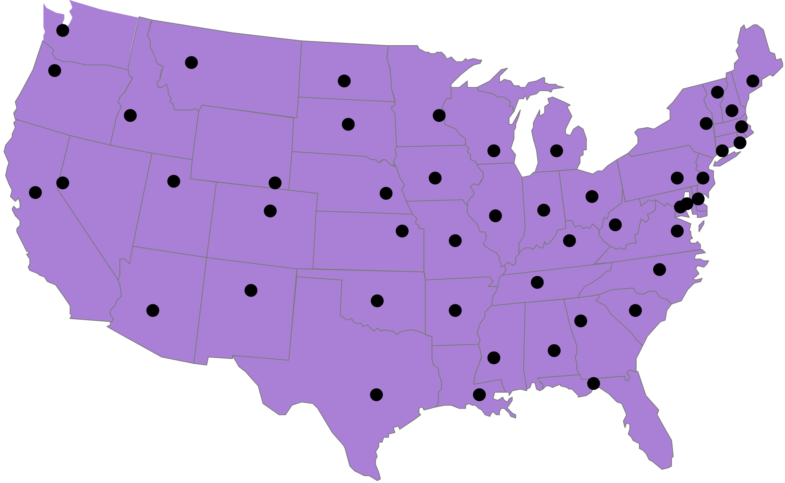
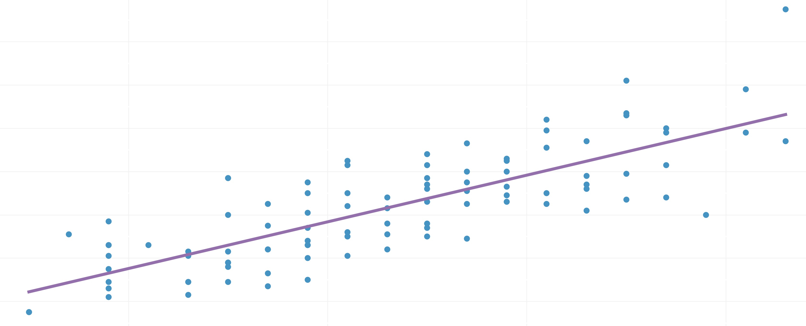
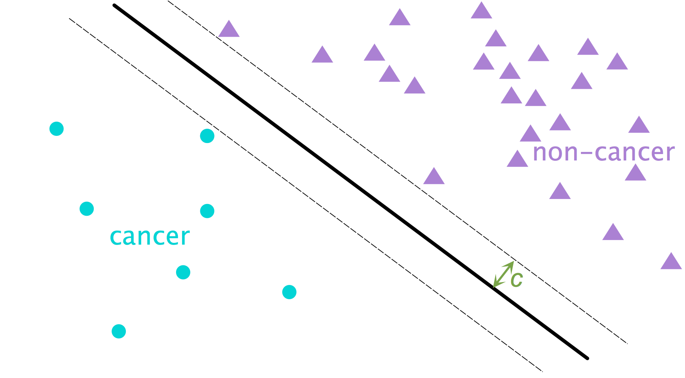
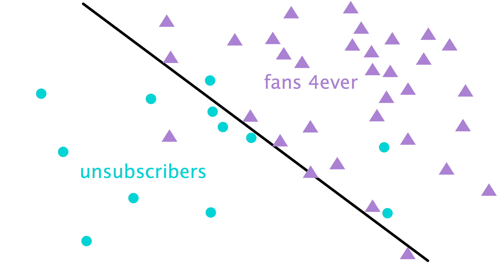
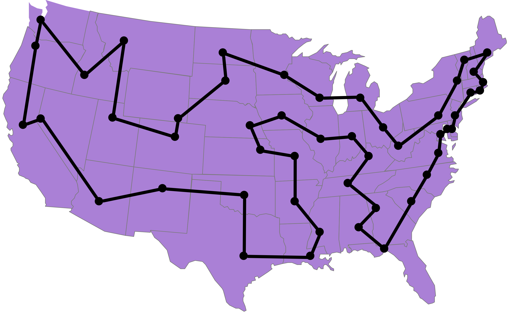

Computational Limits in Machine Learning
Diana Pfeil / @dianam
Analyze Boulder, October 2015
Optimization
minimize cost
subject to constraints
Traveling Salesperson Problem
P ≟ NP
Convex Optimization

Non-Convex Optimization

Back to Data
Linear Regression
Squared loss: $(y - \hat{y})^2$
This problem is “tractable”!
convex optimization problem
Support Vector Machine
$\max c $
s.t. $\| \beta \| = 1$ and $\:y_i (\beta^T x_i) \geq c \:\: i=1,\ldots,n$
Logistic Regression
$\min_{\beta}\sum_i \text{Loss}_{0/1}(y_i \beta^Tx_i)$
$\min_{\beta}\sum_i \text{Loss}_{\text{logistic}} (y_i \beta^Tx_i) $

Traveling Salesman Problem
Optimal Solution
Convex Schmonvex.—Yann LeCun
To solve complicated AI tasks, machine learning will have to go non-convex.—Yann LeCun
Speech Recognition
Handwriting Recognition
Computer Vision
Intractable ≠ Useless
Source: https://c2.staticflickr.com/2/1162/1415120191_2aef20cb08_b.jpg
@dianam
P=NP: millenium problem. Traveling Salesperson problem. Maybe: even or odd number of edges
How does this relate to machine learning?
Have you ever wondered by machine learning algorithms are structured the way they are?
For example: linear regression. or logistic regression
Well, if logistic regression looked like this, it would be non-convex
Regression: add and remove features. Why can't we just find the features that give us the best fit?
SVM, logistic regression: they are formulated that way so that they are convex
convex means: local optimum is a global one.
But in optimization, we tackle non-convex problems all the time! How does the UPS delivery person deliver packages in a reasonable manner? UPS solves a huge version of TSP! They know how close to opimal they are
Deep learning involves a non-convex loss. Yann LaCunn quote about loss.
Feature selection is non-convex